조경기능사 (2005-10-02 기출문제)
1과목: 조경일반
1. 다음 그림과 같은 묘의 종류는?
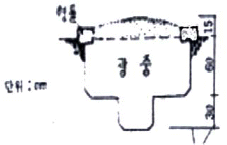
- 봉분형
- 평분형
- 절충식형
- 납골묘
(정답률: 55%)

2. 조경 분야의 프로젝트를 수행하는 단계별로 구분할 때, 자료의 수집 및 분석, 종합과 가장 밀접하게 관련이 있는 것은?
- 계획
- 설계
- 내역서 산출
- 시방서 작성
(정답률: 86%)
3. 국립공원의 발달에 기여한 최초의 미국 국립공원은?
- 엘로우스톤
- 요세미티
- 센트럴파크
- 보스톤 공원
(정답률: 57%)
4. 시공 후 전체적인 모습을 알아보기 쉽도록 그림 다음 같은 형태의 그림은?
- 평면도
- 입면도
- 조감도
- 상세도
(정답률: 87%)
5. 다음 중국식 정원의 설명으로 틀린 것은?
- 차경수법을 도입하였다.
- 사실주의 보다는 상징적 축조가 주를 이루는 사의주의에 입각하였다.
- 유럽의 정원과 같은 건축식 조경수법으로 발달하였다.
- 대비에 중점을 두고 있으며, 이것이 중국정원의 특색을 이루고 있다.
(정답률: 73%)
6. 다음 중 미국조경가협회가 내린 조경에 대한 정의중 시대가 다른 것은?
- 조경은 실용성과 즐거움을 줄 수 있는 환경의 조성에 목표를 둔다.
- 조경은 자원의 보전과 효율적 관리를 도모한다.
- 조경은 문화 및 과학적 지식의 응용을 통하여 설계, 계획하고, 토지를 관리하며 자연 및 인공 요소를 구성하는 기술이다.
- 조경은 인간의 이용과 즐거움을 위하여 토지를 다루는 기술이다.
(정답률: 57%)
7. 다음 중 조경에서 제로를 하는 순서가 올바른 것은?
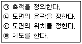
- (ㄱ) - (ㄴ) - (ㄷ) - (ㄹ)
- (ㄴ) - (ㄷ) - (ㄱ) - (ㄹ)
- (ㄴ) - (ㄱ) - (ㄷ) - (ㄹ)
- (ㄷ) - (ㄴ) - (ㄱ) - (ㄹ)
(정답률: 72%)
8. 다음 중 일본의 축산고산수 수법이 아닌 것은?
- 왕모래를 깔아 냇물을 상징하였다.
- 낮게 솟아 잔잔히 흐르는 분수를 만들었다.
- 바위를 세워 폭포를 상징하였다.
- 나무를 다듬어 산봉우리를 상징하였다.
(정답률: 83%)
9. 다음 중 경관구성의 미적 원리 중 통일성과 관련해 성격이 다른 것은?
- 균형과 대칭
- 강조
- 조화
- 율동
(정답률: 69%)
10. 경사진 지형을 깎아 벽과 테라스를 쌓아 계단을 만들고 물, 기타 조경요소를 도입하여 자연경관을 부각시킨 정원 양식은?
- 한국 정원
- 일본 정원
- 이탈리아 정원
- 에스파냐 정원
(정답률: 89%)
11. 조경수목의 구비 조건이 아닌 것은?
- 관상 가치와 실용적 가치가 높아야 한다.
- 이식이 어렵고, 한 곳에서 오래도록 잘 자라야 한다.
- 불리한 환경에서도 견딜 수 있는 적응성이 커야한다.
- 병충해에 대한 저항성이 강해야 한다.
(정답률: 90%)
12. 고려시대 궁궐의 정원을 맡아 관리하던 해당 부서는?
- 내원서
- 정원서
- 상림원
- 동산비치
(정답률: 86%)
13. 다음 그림은 무엇을 나타낸 도면 인가?
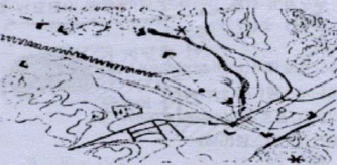
- 경사분석도
- 식생분석도
- 경관분석도
- 토지이용 계획도
(정답률: 49%)
14. 영구위조(永久萎凋) 시의 토양의 수분 함량은 모래(砂土)의 경우 몇 ％ 인가?
- 2 ~ 3％
- 10 ~ 15％
- 20 ~ 25％
- 30 ~ 40％
(정답률: 61%)
15. 골프장 설치장소로 적합하지 않은 곳은?
- 교통이 편리한 위치에 있는 곳
- 골프코스를 흥미롭게 설계 할 수 있는 곳
- 기후의 영향을 많이 받는 곳
- 부지매입이나 공사비가 절약 될 수 있는 곳
(정답률: 90%)
2과목: 조경재료
16. 점토제품 중 돌을 빻아 빚은 것을 1,300℃ 정도의 온도로 구웠기 때문에 거의 물을 빨아들이지 않으며, 마찰이나 충격에 견디는 힘이 강한 것은?
- 벽돌제품
- 토관제품
- 타일제품
- 도자기 제품
(정답률: 75%)
17. 다음 중 수목의 수피가 흰색을 갖는 수종은?
- 배롱나무
- 자작나무
- 흰말채나무
- 노각나무
(정답률: 82%)
18. 다음 중 양수만으로 짝지어진 것은?
- 향나무, 가중나무
- 가시나무, 아왜나무
- 회양목, 주목
- 사철나무, 독일가문비나무
(정답률: 70%)
19. 흡수성과 투수성이 거의 없으므로 배수관, 상·하수도관, 전선 및 게이블관 등에 쓰이는 점토 제품은?
- 벽돌
- 도관
- 플라스틱
- 타일
(정답률: 75%)
20. 다음 중 맹아력이 가장 약한 수종은?
- 리기다소나무
- 쥐똥나무
- 벚나무
- 히말라야시이다
(정답률: 66%)
21. 다음 중 목재 특성의 장점으로 바른 것은?
- 충격. 진동에 대한 저항성이 작다.
- 열전도율이 낮다.
- 충격의 흡수성이 크고, 건조에 의한 변형이 크다.
- 가연성이며 인화점이 낮다.
(정답률: 79%)
22. 가을에 씨부림해야 하는 1년 초화류로 가장 적당한 것은?
- 팬지
- 매리골드
- 샐비어
- 채송화
(정답률: 65%)
23. 다음 돌의 가공방법에 대한 설명으로 잘못된 것은?
- 혹두기 : 표면의 큰 돌출부분만 떼어 내는 정도의 다듬기
- 정다듬 : 정으로 비교적 고르고 곱게 다듬는 정도의 다듬기
- 잔다듬 : 도드락 다듬면을 일정 방향이나 평행선으로 나란히 찍어 다음어 평탄하게 마무리 하는 다듬기
- 도드락다듬 : 흑두기한 면을 연마기나 숫돌로 매끈하게 갈아내는 다듬기
(정답률: 84%)
24. 다음 중 백색 계통 꽃이 피는 수종들로 짝지어진 것은?
- 박태기나무, 개나리, 생강나무
- 쥐똥나무, 이팝나무, 층층나무
- 목련. 조팝나무, 산수유
- 무궁화, 매화나무, 진달래
(정답률: 84%)
25. 다음 중 1속에 서 잎이 5개 나오는 수종은?
- 배송
- 소나무
- 리기다 소나무
- 잣나무
(정답률: 80%)
26. 은행나무 같이 열매의 과육을 주물러 물로 씻은후 종자를 추출하는 방법은?
- 부숙법
- 타작법
- 풍선법
- 유궤법
(정답률: 63%)
27. 석질 재료의 장점이 아닌 것은?
- 외관이 매우 아름답다.
- 내구성과 강도가 크다.
- 가격이 저렴하고 시공이 용이하다.
- 변형되지 않으며 가공성이 있다.
(정답률: 85%)
28. 목재로 구성하기에 적합하지 않은 조경 시설물은?
- 파고라
- 의자
- 쓰레기통
- 데크(deck)
(정답률: 88%)
29. 다음 중 토양의 비옥도에 따라 수종이 영향을 받는데, 척박지에서 생육이 가능한 수종은?
- 가시나무
- 자귀나무
- 녹나무
- 은행나무
(정답률: 64%)
30. 스테레인레스강 이라고 하면 최소 몇 ％ 이상의 크롬이 함유 된 것을 말하는가?
- 4.5％
- 6.5％
- 8.5％
- 10.5％
(정답률: 48%)
31. 겨울철 화단에 심을 수 있는 식물은?
- 알리섬
- 꽃양배추
- 메리골드
- 금어초
(정답률: 91%)
32. 녹막이 페인트가 갖추어야 할 성질에 해당하는 것은?
- 탄력성이 가급적 적을 것
- 내구성이 작을 것
- 투수성일 것
- 마찰 충격에 견딜 수 있을 것
(정답률: 71%)
33. 목재의 두께가 7.5cm 미만에 폭이 두께의 4배 이상인 제재목은?
- 판재
- 각재
- 원목
- 합판
(정답률: 73%)
34. 조경용 수목의 선정조건이 아닌 것은?
- 가격이 비싼 수목
- 환경에 잘 적응하는 수목
- 관상적 가치가 높은 수목
- 이식이 잘되는 수목
(정답률: 92%)
35. 다음 중 덩굴성식물로 가장 바른 것은?
- 서향
- 송악
- 병아리꽃나무
- 피라칸사스
(정답률: 81%)
3과목: 조경 시공 및 관리
36. 신장 생장이 불량하여 줄기나 가지가 가늘고 작아지며, 묵은 잎이 황변하여 떨어질 때 결핍된 비료의 요소는?
- 질소
- 인
- 칼륨
- 칼슘
(정답률: 80%)
37. 터닦기 할 때 성토시(흙쌓기) 침하에 대비하여 계획된 높이 보다 몇 ％ 정도 더돋기를 하는가?
- 3 ~ 5％
- 10 ~ 15％
- 20 ~ 25％
- 30 ~ 35％
(정답률: 83%)
38. 비탈면에 교목을 식재할 때 비탈면의 기울기는 어느 정도 보다 완만하여야 하는가?
- 1 : 1 정도
- 1 : 1.5 정도
- 1 : 2 정도
- 1 : 3 정도
(정답률: 67%)
39. 인간이나 기계가 공사 목적물을 만들기 위하여 단위물량당 소요로 하는 노력과 품질을 수량으로 표현한 것을 무엇 이라 하는가?
- 할증
- 품셈
- 견적
- 내역
(정답률: 86%)
40. 조경분야에서 컴퓨터를 활용함에 있어서 설계 대상지의 특성을 분석하기 위해 자료수집 및 분석에 사용되는 것으로 가장 알맞은 것은?
- 워드프로세서(word processor)
- 캐드시스템(CAD system)
- 이미지 프로세싱(image processing)
- 지리정보시스템(GIS)
(정답률: 71%)
41. 자연식 정원에 퍼컬러의 들보와 도리 및 아아치와 트렐리스 재료로 보통 조화롭게 쓰이는 것은?
- 목재
- 콘크리트
- 석재
- P.V.C
(정답률: 76%)
42. 나무의 개화, 결실을 돕기 위한 목적으로 하는 전정을 설명한 것 중 틀린 것은?
- 끝눈에서 개화하는 나무는 꽃이 진 직후에 가지치기를 실시한다.
- 열매를 목적으로 할 때에는 수액이 유동하기 전인 휴면기에 전정을 한다.
- 곁눈이 꽃눈으로 분화하는 나무는 휴면기에 가지치기를 한다.
- 약한 가지는 길게, 강한 가지는 짧게 전정하는 것을 원칙으로 하되 수세를 보아가면서 한다.
(정답률: 76%)
43. 다음 중 전등의 평균수명이 가장 긴 것은?
- 백열전구
- 할로겐등
- 수은등
- 형광등
(정답률: 78%)
44. 다음 그림 중 겅구장 같은 면적의 전지역을 균일하게 배수하려는 빗살형 암거 방법은?
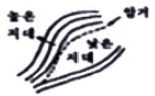
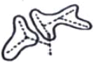
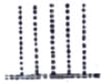
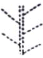
(정답률: 62%)
45. 조경설계에 있어서 수목을 표현할 때 가장 많이 사용하는 제도 용구는?
- T자
- 원형템플릿
- 삼각축척(스케일)
- 삼각자
(정답률: 88%)
46. 계산설계에서 단 높이를 18cm로 했을 때 계단 폭은 어느 정도가 가장 적당한가?
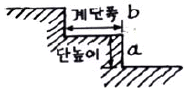
- 10 ~15cm
- 15 ~ 20cm
- 20 ~ 25cm
- 25 ~ 30cm
(정답률: 63%)
47. 많은 나무를 모아 심었거나 줄지어 심었을 때 적합한 지주 설치법은?
- 담각지주
- 이각지주
- 삼각지주
- 연결형(연계형)지주
(정답률: 85%)
48. 다음 중 그해 자란 1년생 신초지(新稍枝)에서 꽃눈이 분화하여 그 해에 개화하는 화목류는?
- 무궁화
- 개나리
- 목련
- 수국
(정답률: 59%)
49. 단면상세도에 상에서 철근 D-16 ⓐ 300 이라고적혀 있을때, ⓐ는 무엇을 나타내는가?
- 철근의 간격
- 철근의 길이
- 철근의 직경
- 철근의 갯수
(정답률: 56%)
50. 다음 중 흰불나방의 피해가 가장 많이 발생하는 수종은?
- 감나무
- 사철나무
- 플라타너스
- 측백나무
(정답률: 67%)
51. 다음 중 소나무류 순자르기에 가장 적당한 시기는?
- 봄
- 여름
- 가을
- 겨울
(정답률: 63%)
52. 진흙 굳히기 공법은 어느 공사에서 사용되는가?
- 원로공사
- 암거공사
- 연못공사
- 웅벽공사
(정답률: 75%)
53. 도로 식재 중 사고방지 기능 식재에 속하지 않은 것은?
- 명암순응식재
- 시선유도식재
- 녹음식재
- 침입방지식재
(정답률: 77%)
54. 울타리는 종류나 쓰이는 목적에 따라 높이가 다른데 일반적으로 사람의 침입을 방지하기 위한 울타리의 경우 높이는 어느 정도가 가장 적당한가?
- 20 ~ 30cm
- 50 ~ 60cm
- 80 ~ 100cm
- 180 ~ 200cm
(정답률: 78%)
55. 다음 중 콘크리트의 장점이 아닌 것은?
- 재료의 획득 및 운반이 용이하다.
- 인장강도와 휨 강도가 크다.
- 압축강도가 크다.
- 내구성, 내화성, 내수성이 크다.
(정답률: 76%)
56. 다음 중 조경에서 경관석 놓기에 대한 설명 중 가장 옳지 않은 것은?
- 경관석 놓기는 시각적으로 중요한 곳이나 추상적인 경관을 연출하기 위하여 이용된다.
- 경관석 놓기는 2·4·6·8과 같이 짝수로 무리지어 놓는 것이 자연스럽다.
- 가장 중심이 되는 자리에 가장 크고 기품이 있는 경관석을 중심석으로 배치한다.
- 전체적으로 볼 때, 힘의 방향이 분산되지 않아야 한다.
(정답률: 91%)
57. 다음 중 방사형 시비 방법으로 전당한 것은?
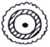
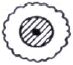
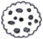
(정답률: 84%)
58. 다음 그림 중 마디의 가지다듬기가 가장 잘된 것은?
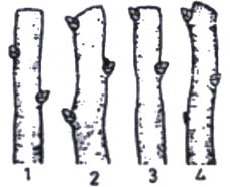
- 1
- 2
- 3
- 4
(정답률: 78%)
59. 다음 중 루비깍지벌레의 구제에 가장 효과적인 농약은?
- 메타유제 (메타시스톡스)
- 티디폰수화제 (바라톡)
- 디프수화제 (디프록스)
- 메치온유제 (수프라사이드)
(정답률: 59%)
60. 다음 중 조경 시공 순서로 가장 알맞은 것은?
- 터닦기 → 급, 배수 및 호안공 → 콘크리트 공사 → 정원 시설물 설치 → 식재공사
- 식재공사 → 터닦기 → 정원 시설물 설치 → 콘크리트 공사 → 급, 배수 및 호안공
- 급, 배수 및 호안공 → 정원시설물 설치 → 큰크리트 공사 → 식재공사 → 터닦기
- 정원시설물 설치 → 급, 배수 및 호안공 → 식재공사 → 터닦기 → 콘크리트공사
(정답률: 90%)
이유는 묘의 형태가 좌우 대칭이며, 중앙에 평평한 부분이 있어 평분형이라고 부릅니다. 또한, 봉과 같은 높은 부분이 없어서 봉분형이 아니며, 절충식형은 좌우 대칭이 아니고 납골묘는 다른 형태를 가지고 있습니다.